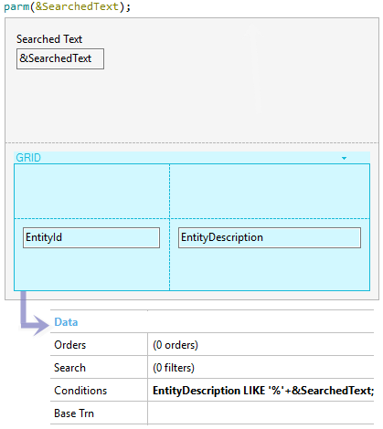

The increasing amount of data managed by an application is a reality. Nowadays, it is vital for every system to display content to the end user as quickly as possible and in a friendly way. SearchBox controlThe SearchBox control is a facility for the developers to improve the search mechanism in their applications. Its aim is to store the last keyword that the end user wants to search and give a friendly UI for them. Warning: When the developer uses a search-box control should not set Enter Event property because the keyboard enter action will always execute a search.
Adding the control1) Create a string variable in a Panel (Character, VarChar or LongVarChar). PropertiesWhen Control Type property is set with SearchBox value, new properties are displayed.
MethodsDoSearch It helps the developer to call the search Result Panel programmatically in a client-side event with the value set in It. Parameters None Usage exampleDesigning the Result PanelThe first decision to make is to properly design the Result Panel which shows the result of the search. 1st - Adding a parm rule The Result Panel is called implicitly by the main object which includes the associated SearchBox control. parm(&SearchedText) The variable received in this rule is declared without in/out directives, because it can be helpful to assign it or simply read it. 2nd - Include a grid with a condition The Result Panel's aim is to show a set of records that match with the keyword. MyStringAttribute LIKE '%'+&SearchedText; Where &SerchedText is the string variable received in the parm rule and MyStringAttribute some string attribute that we want to match the text. Summarizing, the complete process to create the Result Panel is similar to that described in the image below.  Adding features to the Result PanelThe Search external object purpose is to define events in the Result Panel in order to be triggered when the end user executes a certain condition. Event Search.SearchTextChanged(&vText) &SearchedText = &vText refresh EndEvent Remember that &SerchedText is the string variable received in the parm rule. DownloadYou can download this example from here. Notes
Scope
AvailabilityThis article applies as from GeneXus 15.
|
| Backlinks | |
| Control Type property | Results Panel property |